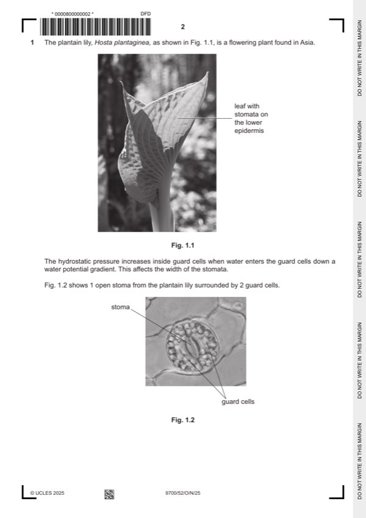

Question 1

Original paper page 2
Part 1(a)(i) — solution
independent: sucrose concentration ; 2
dependent: width of stomata ;
Mark points
- Include the ideas shown in the solution above.
Part 1(a)(ii) — solution
2.5 and 17.5 (to produce a 2.5% sucrose solution) ; 2
Mark points
- Include the ideas shown in the solution above.
Part 1(a)(iii) — solution
1 use all sucrose concentrations ; 5
any four from:
Mark points
- Include the ideas shown in the solution above.
Part 1(a)(iv) — solution
predict: 2
(as sucrose concentration increases width of stomata) decreases ;
Explain (must match the prediction):
(as the sucrose concentration increases) water leaves the guard cells, by, osmosis / down a water potential gradient / from
high to low water potential ;
or
(as the sucrose concentration increases) less water enters the guard cells, by osmosis / down a water potential gradient
from high to low water potential ;
Mark points
- Include the ideas shown in the solution above.
Part 1(b)(i) — solution
- 1 stomatal density = 367 (mm-2) ; 4
Mark points
- 1 stomatal density = 367 (mm-2) ; 4
Part 1(b)(ii) — solution
use more than one, field of view / slide / epidermis / (plantain lily) leaf ; 1
University Press & Assessment 2025 Page 9 of 12
9700/52 Cambridge International AS & A Level – Mark Scheme October/November 2025
Mark points
- Include the ideas shown in the solution above.
Part 1 — solution
Environmental condition ; 2 Explanation ;
dry / arid / less water So less water lost / less transpiration
low humidity
high temperature / warm / hot
windy / high wind speed
Mark points
- Include the ideas shown in the solution above.
Part 1 — solution
as ABA concentration increases, transpiration rate decreases, except at (ABA concentration of) 50 ;
Mark points
- Include the ideas shown in the solution above.
Part 1 — solution
add different volumes of water (to the filter paper) ;
Mark points
- Include the ideas shown in the solution above.